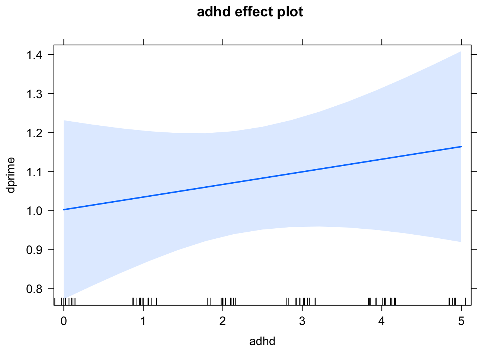

Modeling
Goals of This Lesson
- Learn about functions and syntax for models in R
- Practice examples of different model types
- Understand how to obtain model results in R
- Learn how to visualize the results of the models
Links to Files
The files for all tutorials can be downloaded from the Columbia Psychology Scientific Computing GitHub page. This particular file is located here: /content/tutorials/r-core/5-modeling/index.rmd.
Load Data
Let’s get some data.
We will use the same data we are already familiar with from the Data Manipulation lesson. We will compute a group for high and low ADHD, so we can use that in our models.
df <- read_csv(here("content", "tutorials", "r-core", "5-models", "uncapher_2016_repeated_measures_dataset.csv"))## Warning: Missing column names filled in: 'X1' [1]## Parsed with column specification:
## cols(
## X1 = col_double(),
## X = col_double(),
## subjNum = col_double(),
## groupStatus = col_character(),
## numDist = col_double(),
## conf = col_character(),
## hitCount = col_double(),
## allOldCount = col_double(),
## rtHit = col_double(),
## faCount = col_double(),
## allNewCount = col_double(),
## rtFA = col_double(),
## distPresent = col_character(),
## hitRate = col_double(),
## faRate = col_double(),
## dprime = col_double(),
## mmi = col_double(),
## adhd = col_double(),
## bis = col_double()
## )head(df)## # A tibble: 6 x 19
## X1 X subjNum groupStatus numDist conf hitCount allOldCount rtHit
## <dbl> <dbl> <dbl> <chr> <dbl> <chr> <dbl> <dbl> <dbl>
## 1 1 1 2 LMM 0 hi 4 25 1.16
## 2 7 7 2 LMM 6 hi 12 25 0.978
## 3 9 9 5 LMM 0 hi 12 25 0.867
## 4 15 15 5 LMM 6 hi 8 25 0.780
## 5 17 17 6 HMM 0 hi 18 25 0.991
## 6 23 23 6 HMM 6 hi 14 25 0.952
## # … with 10 more variables: faCount <dbl>, allNewCount <dbl>, rtFA <dbl>,
## # distPresent <chr>, hitRate <dbl>, faRate <dbl>, dprime <dbl>, mmi <dbl>,
## # adhd <dbl>, bis <dbl>Clean up the data for these models.
df <- df %>%
# only keep data from the task when distractor was present
dplyr::filter(numDist == 6) %>%
# only include high or low groups for multitasking.
dplyr::filter(groupStatus != "") %>%
# if adhd score is lower than mean, label "low", else label "high""
mutate(adhdF = as.factor(ifelse(adhd < mean(adhd), "Low ADHD", "High ADHD")))
names(df)## [1] "X1" "X" "subjNum" "groupStatus" "numDist"
## [6] "conf" "hitCount" "allOldCount" "rtHit" "faCount"
## [11] "allNewCount" "rtFA" "distPresent" "hitRate" "faRate"
## [16] "dprime" "mmi" "adhd" "bis" "adhdF"Basics of Modeling in R
Functions
Basic models
For each model type, there is a different function. Many of these are available in base R.
T-TEST: t.test()
CORRELATION: cor.test()
LINEAR REGRESSION: lm()
ANOVA: aov()
Each function has their own set of arguments, based on the options available.
Always use the ? to see more details for the model you’re using.
The first argument is always the model formula, which follows a standard syntax.
Syntax
Basic model formula
For any type of model with an IV and DV, there is a common syntax. The “~” delineates the direction of the model, where the DV is always on the left of the ~ and the predictors are always on the right.
Y ~ X
Example of t-test:
t.test(dprime ~ adhdF, data = df)##
## Welch Two Sample t-test
##
## data: dprime by adhdF
## t = 0.82237, df = 65.971, p-value = 0.4138
## alternative hypothesis: true difference in means is not equal to 0
## 95 percent confidence interval:
## -0.1528184 0.3668753
## sample estimates:
## mean in group High ADHD mean in group Low ADHD
## 1.134668 1.027639When working with a dataframe, you can either index your data with $ or provide a second argument in the function, delineating which data your variables come from – the output will be identical. However, we recommend the 2nd option, as it ensures that you will be always working with columns from the same data frame, and is less susceptible to mistakes
Example of a linear regression:
lm(dprime ~ adhd, data = df)##
## Call:
## lm(formula = dprime ~ adhd, data = df)
##
## Coefficients:
## (Intercept) adhd
## 1.00259 0.03232Example of an ANOVA:
aov(dprime ~ adhdF, data = df)## Call:
## aov(formula = dprime ~ adhdF, data = df)
##
## Terms:
## adhdF Residuals
## Sum of Squares 0.194568 19.079700
## Deg. of Freedom 1 66
##
## Residual standard error: 0.5376675
## Estimated effects may be unbalancedTo add multiple variables
(in ANOVA or linear regression), simply add a “+” for each variable on the right of the formula:
Y ~ X1 + X2 + X3
Here is a linear model example with 2 predictors (continuous):
lm(dprime ~ adhd + bis, data = df)##
## Call:
## lm(formula = dprime ~ adhd + bis, data = df)
##
## Coefficients:
## (Intercept) adhd bis
## 1.501210 0.076428 -0.009878Here is an ANOVA example with 2 predictors (continuous):
aov(dprime ~ adhdF + bis, data = df)## Call:
## aov(formula = dprime ~ adhdF + bis, data = df)
##
## Terms:
## adhdF bis Residuals
## Sum of Squares 0.194568 0.379579 18.700121
## Deg. of Freedom 1 1 65
##
## Residual standard error: 0.5363713
## Estimated effects may be unbalancedInteractions
When you want to test the interaction between two variables, add a “:”. The colon will automatically create an interaction regressor between X1 and X2. You still need to add each variable alone to calculate their main effects.
Y ~ X1 + X2 + X1:X2
Alternatively, a shortcut is to use an asterisk "*" that provides a shortcut. It will automatically create an interaction regressor AND the main effects for each variable.
Y ~ X1*X2 is identical to Y ~ X1 + X2 + X1:X2
Example of an interaction between 2 continous variables in linear regression:
lm(dprime ~ adhd*bis, data = df)##
## Call:
## lm(formula = dprime ~ adhd * bis, data = df)
##
## Coefficients:
## (Intercept) adhd bis adhd:bis
## 2.506924 -0.286411 -0.027917 0.006095Example of an interaction between 2 categorical variables in ANOVA:
aov(dprime ~ adhdF*groupStatus, data = df)## Call:
## aov(formula = dprime ~ adhdF * groupStatus, data = df)
##
## Terms:
## adhdF groupStatus adhdF:groupStatus Residuals
## Sum of Squares 0.194568 0.668572 0.997226 17.413902
## Deg. of Freedom 1 1 1 64
##
## Residual standard error: 0.5216246
## Estimated effects may be unbalancedIn the case where there is no IV/DV (i.e. correlation between 2 continuous variables), there is no “~”.
Instead there is a “,”" to delineate 2 different variables.
Example of a correlation:
cor.test(df$dprime, df$adhd)##
## Pearson's product-moment correlation
##
## data: df$dprime and df$adhd
## t = 0.81541, df = 66, p-value = 0.4178
## alternative hypothesis: true correlation is not equal to 0
## 95 percent confidence interval:
## -0.1419368 0.3304253
## sample estimates:
## cor
## 0.09986798Output of models
The output of your code will depend on the model type. Linear models have much more information to output relative to t-tests, so they require an additional “summary()” call on the model to see the full results.
Linear models
The output includes the following:
- the formula of your model
- residuals
- coefficients of the model (estimate, st. error, t-value, p-value)
- overall model results (RSE, R-squared, F-statistics, p-value)
# first, we will save our model object and call it lm1
lm1 <- lm(dprime ~ adhd, data = df)
# then we will ask for the summary of the model results
summary(lm1)##
## Call:
## lm(formula = dprime ~ adhd, data = df)
##
## Residuals:
## Min 1Q Median 3Q Max
## -0.98723 -0.30809 -0.03777 0.36780 1.19871
##
## Coefficients:
## Estimate Std. Error t value Pr(>|t|)
## (Intercept) 1.00259 0.11475 8.737 1.28e-12 ***
## adhd 0.03232 0.03963 0.815 0.418
## ---
## Signif. codes: 0 '***' 0.001 '**' 0.01 '*' 0.05 '.' 0.1 ' ' 1
##
## Residual standard error: 0.5377 on 66 degrees of freedom
## Multiple R-squared: 0.009974, Adjusted R-squared: -0.005027
## F-statistic: 0.6649 on 1 and 66 DF, p-value: 0.4178# save the model
save (lm1, file = "my_model.Rda")We can index specific components of the output. What if I want to save the coefficients to a table?
summary(lm1)$coefficients## Estimate Std. Error t value Pr(>|t|)
## (Intercept) 1.00258818 0.11474797 8.7373063 1.275135e-12
## adhd 0.03231744 0.03963347 0.8154078 4.177719e-01# save the table for later
my_table <- summary(lm1)$coefficients
save(my_table, file = "my_table.Rda")ANOVA
The output includes the results for each factor in the model.
Here is an example for a one-way ANOVA:
a1 <- aov(dprime ~ adhdF, data = df)
summary(a1)## Df Sum Sq Mean Sq F value Pr(>F)
## adhdF 1 0.195 0.1946 0.673 0.415
## Residuals 66 19.080 0.2891Here is an example for a 2x2 ANOVA:
a2 <- aov(dprime ~ adhdF * groupStatus, data = df)
summary(a2)## Df Sum Sq Mean Sq F value Pr(>F)
## adhdF 1 0.195 0.1946 0.715 0.401
## groupStatus 1 0.669 0.6686 2.457 0.122
## adhdF:groupStatus 1 0.997 0.9972 3.665 0.060 .
## Residuals 64 17.414 0.2721
## ---
## Signif. codes: 0 '***' 0.001 '**' 0.01 '*' 0.05 '.' 0.1 ' ' 1Visualizing models
There are many ways (and packages) to plot the output of your models.
We will start with a handy package, effects, that plots the effects of many model types. Note that these plots are made with base R, not ggplot2, so you can’t use ggplot2 tools to tweak their appearance.
Let’s plot the effect of ADHD on dprime from our linear model.
# This function requires the X variable in quotes, and the saved model object
plot(effect("adhd", lm1))
There are many more options you can add to customize the plot!
plot(effect("adhd", lm1), rug = F, colors = "red", xlab = "ADHD symptoms", ylab = "D-prime",
axes=list(grid=TRUE))
Visualizing continuous x continous interactions:
plot(effect("adhdF:groupStatus", a2), xlab = "", colors = c("Blue", "Black"))
If you want to really make beautiful graphs and customizations of your models, we encourage you to experiment with ggplot2!
Advanced models
For more advanced modeling, you may need to download packages for those model types. Two common examples you may see in graduate level statistics include:
lmer()for mixed effects modeling using thelme4packagemediation()for mediations using themediatepackage
However, the opportunities for modeling in R are endless! There is a package for any kind of model you can think of.